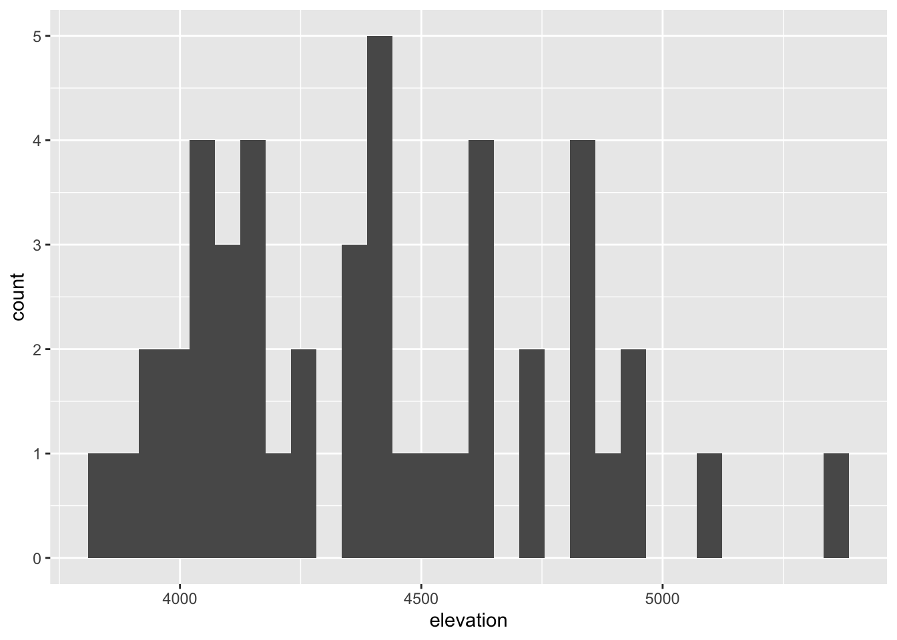
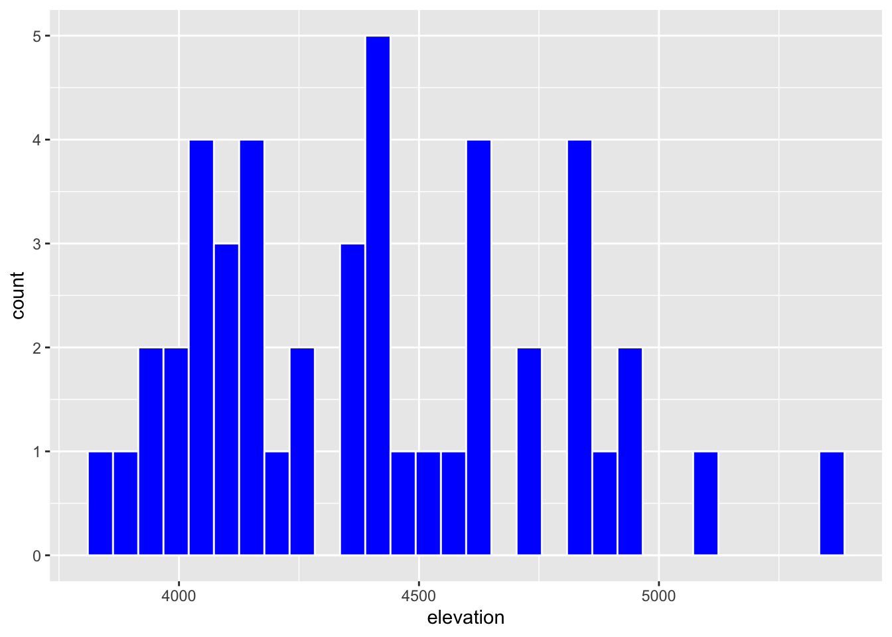
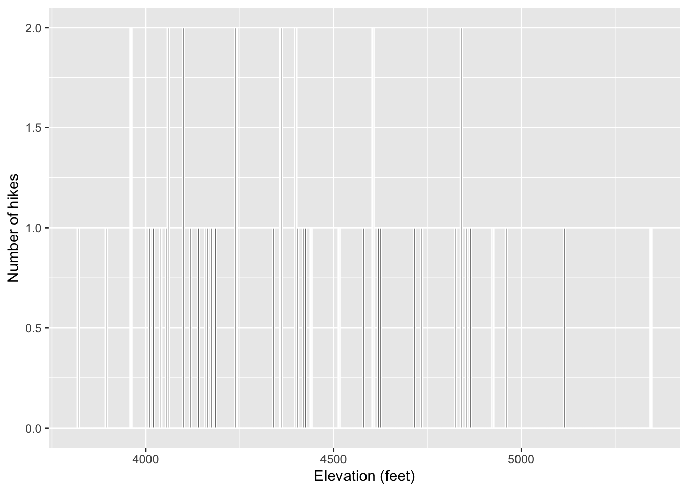

6 Univariate Viz
Use this file for practice with the univariate viz in-class activity. Refer to the class website for details.
Warm-up (together)
- Convince ourselves about the importance of data viz.
- Explore the “grammar of graphics”.
Exercises (in groups)
- Familiarize yourself with the
ggplot()structure and grammar. - Build univariate viz, i.e. viz for 1 variable at a time.
- Start recognizing the different approaches for visualizing categorical vs quantitative variables.
For more information about the topics covered in this chapter, refer to the resources below:
- Intro to ggplot (YouTube) by Lisa Lendway
- Univariate viz interpreting (YouTube) by Alicia Johnson–you can ignore the parts about numerical summaries.
- A grammar for data graphics (html) by Baumer, Kaplan, & Horton
- Data visualization (html) by Wickham, Çetinkaya-Rundel, & Grolemund
- Visualizing distributions (html) by Wilke
- ggplot cheatsheet (pdf)
General
- Be kind to yourself.
- Collaborate with and be kind to others. You are expected to work together as a group.
- Ask questions. Remember that we won’t discuss these exercises as a class.
Activity Specific
Help each other with the following:
- Create a new Quarto document in the activities folder of your portfolio project and do not forgot to include it in
_quarto.ymlfile. Then click the</> Codelink at the top right corner of this page and copy the code into the created Quarto document. This is where you’ll take notes. Remember that the portfolio is yours, so take notes in whatever way is best for you. - Don’t start the Exercises section before we get there as a class. First, engage in class discussion and eventually collaborate with your group on the exercises!
- The best way to learn
ggplotis to just play around. Focus on the patterns and potential of the code. Don’t worry about memorizing anything! You will naturally start to remember the most important / common code the more and more you use it.
6.1 Background
We’re starting our unit on data visualization or data viz, thus skipping some steps in the data science workflow. Mainly, it’s tough to understand how our data should be prepared before we have a sense of what we want to do with this data!

6.2 Warm-up
6.2.1 The Importance of Visualizations
EXAMPLE 1
The data below includes information on hiking trails in the 46 “high peaks” in the Adirondack mountains of Northeastern New York state. This includes data on the hike’s highest elevation (feet), vertical ascent (feet), length (miles), time in hours that it takes to complete, and difficulty rating. Open this data in a viewer, through the Environment tab or by typing View(hikes) in the console.
- What is the pattern / trend of
elevationof hiking trails? - What is the relationship between a hike’s
elevationand typicaltimeit takes to summit / reach the top?
EXAMPLE 2
Look at the plot below taken from a story reported by this New York Times article (html).
Suppose that the article tried telling the story without using data viz, What would that story be like?

Benefits of Visualization
- Understand what we’re working with from
- scales & typical outcomes, to
- outliers, i.e. unusual cases, to
- patterns & relationships
- Refine research questions & inform next steps of our analysis.
- Communicate our findings and tell a story.
6.2.2 Components of data graphics
EXAMPLE 3
Data viz is the process of mapping data to different plot components. For example, in the NYT example above, the research team mapped data like the following (but with many more rows!) to the plot:
| observation | decade | year | date | relative temp |
|---|---|---|---|---|
| 1 | 2020-30 | 2023 | 1/23 | 1.2 |
| 2 | 1940-60 | 1945 | 3/45 | -0.05 |
Write down step-by-step directions for using a data table like the one above to create the temperature visualization. A computer is your audience, thus be as precise as possible, but trust that the computer can find the exact numbers if you tell it where.
COMPONENTS OF GRAPHICS
In data viz, we essentially start with a blank canvas and then map data onto it. There are multiple possible mapping components. Some basics from Wickham (which goes into more depth):
a frame, or coordinate system
The variables or features that define the axes and gridlines of the canvas.a layer
The geometric elements (e.g. lines, points) we add to the canvas to represent either the data points themselves or patterns among the data points. Each type of geometric element is a separate layer. These geometric elements are sometimes called “geoms” or “glyphs” (like heiroglyph!)scales
The aesthetics we might add to geometric elements (e.g. color, size, shape) to incorporate additional information about data scales or groups.faceting
The splitting up of the data into multiple subplots, or facets, to examine different groups within the data.a theme
Additional controls on the “finer points” of the plot aesthetics, (e.g. font type, background, color scheme).
EXAMPLE
In the NYT graphic, the data was mapped to the plot as follows:
- frame: x-axis = date, y-axis = temp
- layers: add one line per year, add dots for each month in 2023
- scales: color each line by decade
- faceting: none
- a theme: NYT style
6.2.3 ggplot + R packages
We will use the powerful ggplot tools in R to build (most of) our viz. The gg here is short for the “grammar of graphics”. These tools are developed in a way that:
- recognizes that code is communication (it has a grammar!)
- connects code to the components / philosophy of data viz
EXAMPLES: ggplot in the News
To use these tools, we must first get them into R/RStudio! Recall that R is open source. Anybody can build R tools and share them through special R packages. The tidyverse package compiles a set of individual packages, including ggplot2, that share a common grammar and structure. Though the learning curve can be steep, this grammar is intuitive and generalizable once mastered. Image source: Posit BBC on X

Follow the directions below to install this package, the directions depending upon whether or not you’re working on Mac’s server. Unless the authors of a package add updates, you only need to do this once all semester. To install:
-
If you’re working on Mac’s RStudio server
tidyverseis already installed on the server! Check this 2 ways.- Type
library(tidyverse)in your console. If you don’t get an error, it’s installed! - Check that it appears in the list under the “Packages” tab (bottom right pane).
- Type
-
If you’re working with a desktop version of R/RStudio
In the “Packages” tab (bottom right pane), click “Install”. From there type the name of the package (tidyverse), make sure the “Install dependencies” box is checked, and click “Install”.
6.3 Exercises
Exercise 1: Research Questions
Let’s dig into the hikes data, starting with the elevation and difficulty ratings of the hikes:
peak elevation difficulty ascent length time rating
1 Mt. Marcy 5344 5 3166 14.8 10.0 moderate
2 Algonquin Peak 5114 5 2936 9.6 9.0 moderate
3 Mt. Haystack 4960 7 3570 17.8 12.0 difficult
4 Mt. Skylight 4926 7 4265 17.9 15.0 difficult
5 Whiteface Mtn. 4867 4 2535 10.4 8.5 easy
6 Dix Mtn. 4857 5 2800 13.2 10.0 moderate- What features would we like a visualization of the categorical difficulty
ratingvariable to capture? - What about a visualization of the quantitative
elevationvariable?
Exercise 2: Load tidyverse
We’ll address the above questions using ggplot tools. Try running the following chunk and simply take note of the error message – this is one you’ll get a lot!
In order to use ggplot tools, we have to first load the tidyverse package in which they live. Mainly, we’ve installed the package but need to tell R when we want to use it. Run the chunk below to load the library. You’ll need to do this within any .qmd file that uses ggplot().
Exercise 3: Bar Chart of Ratings - Part 1
Consider some specific research questions about the difficulty rating of the hikes:
- How many hikes fall into each category?
- Are the hikes evenly distributed among these categories, or are some more common than others?
All of these questions can be answered with: (1) a bar chart; of (2) the categorical data recorded in the rating column. First, set up the plotting frame:
Think about:
- What did this do? What do you observe?
- What, in general, is the first argument of the
ggplot()function?The data - What is the purpose of writing
x = rating? - What do you think
aesstands for?!?
Exercise 4: Bar Chart of Ratings - Part 2
Now let’s add a geometric layer to the frame / canvas, and start customizing the plot’s theme. To this end, try each chunk below, one by one. In each chunk, make a comment about how both the code and the corresponding plot both changed.
NOTE:
- Pay attention to the general code properties and structure, not memorization.
- Not all of these are “good” plots. We’re just exploring
ggplot.
Exercise 5: Bar Chart Follow-up
Part a
Reflect on the ggplot() code.
What’s the purpose of the
+? When do we use it?- Use it to add a new commandWe added the bars using
geom_bar()? Why “geom”?- Use it to add a bar graphWhat does
labs()stand for? - Use it to add the axis or dimensionsWhat’s the difference between
colorandfill? - color changes boundaries and fill fills in the bar graph
Part b
In general, bar charts allow us to examine the following properties of a categorical variable:
observed categories: What categories did we observe?
difficult
easy
moderate
variability between categories: Are observations evenly spread out among the categories, or are some categories more common than others?
Some categories are more common than others
We must then translate this information into the context of our analysis, here hikes in the Adirondacks. Summarize below what you learned from the bar chart, in context.
- Most hikes in the Adirondacks are moderate in rating and the only a few hikes are difficult in the given data
Part c
Is there anything you don’t like about this barplot? For example: check out the x-axis again.
The categories are not orderd by difficulty
Exercise 6: Sad Bar Chart
Let’s now consider some research questions related to the quantitative elevation variable:
Among the hikes, what’s the range of elevation and how are the hikes distributed within this range (e.g. evenly, in clumps, “normally”)? It is ordered in clumps
What’s a typical elevation?
Are there any outliers, i.e. hikes that have unusually high or low elevations?
Here:
Construct a bar chart of the quantitative
elevationvariable.Explain why this might not be an effective visualization for this and other quantitative variables. (What questions does / doesn’t it help answer?)
Each x value would be its own category and it would be too many
Exercise 7: A Histogram of Elevation
Quantitative variables require different viz than categorical variables. Especially when there are many possible outcomes of the quantitative variable. It’s typically insufficient to simply count up the number of times we’ve observed a particular outcome as the bar graph did above. It gives us a sense of ranges and typical outcomes, but not a good sense of how the observations are distributed across this range. We’ll explore two methods for graphing quantitative variables: histograms and density plots.
Histograms are constructed by (1) dividing up the observed range of the variable into ‘bins’ of equal width; and (2) counting up the number of cases that fall into each bin. Check out the example below:

Part a
Let’s dig into some details.
How many hikes have an elevation between 4500 and 4700 feet?
6
How many total hikes have an elevation of at least 5100 feet?
1+1 = 2
Part b
Now the bigger picture. In general, histograms allow us to examine the following properties of a quantitative variable:
- typical outcome: Where’s the center of the data points? What’s typical?
- variability & range: How spread out are the outcomes? What are the max and min outcomes?
- shape: How are values distributed along the observed range? Is the distribution symmetric, right-skewed, left-skewed, bi-modal, or uniform (flat)?
- outliers: Are there any outliers, i.e. outcomes that are unusually large/small?
We must then translate this information into the context of our analysis, here hikes in the Adirondacks. Addressing each of the features in the above list, summarize below what you learned from the histogram, in context.
Exercise 8: Building Histograms - Part 1
2-MINUTE CHALLENGE: Thinking of the bar chart code, try to intuit what line you can tack on to the below frame of elevation to add a histogram layer. Don’t forget a +. If it doesn’t come to you within 2 minutes, no problem – all will be revealed in the next exercise.
Exercise 9: Building Histograms - Part 2
Let’s build some histograms. Try each chunk below, one by one. In each chunk, make a comment about how both the code and the corresponding plot both changed.
Exercise 10: Histogram Follow-up
- What function added the histogram layer / geometry?
- What’s the difference between
colorandfill? - Why does adding
color = "white"improve the visualization? - What did
binwidthdo? - Why does the histogram become ineffective if the
binwidthis too big (e.g. 1000 feet)? - Why does the histogram become ineffective if the
binwidthis too small (e.g. 5 feet)?
Exercise 11: Density Plots
Density plots are essentially smooth versions of the histogram. Instead of sorting observations into discrete bins, the “density” of observations is calculated across the entire range of outcomes. The greater the number of observations, the greater the density! The density is then scaled so that the area under the density curve always equals 1 and the area under any fraction of the curve represents the fraction of cases that lie in that range.
Check out a density plot of elevation. Notice that the y-axis (density) has no contextual interpretation – it’s a relative measure. The higher the density, the more common are elevations in that range.
Questions
-
INTUITION CHECK: Before tweaking the code and thinking back to
geom_bar()andgeom_histogram(), how do you anticipate the following code will change the plot?geom_density(color = "blue")geom_density(fill = "orange")
TRY IT! Test out those lines in the chunk below. Was your intuition correct?
- Examine the density plot. How does it compare to the histogram? What does it tell you about the typical elevation, variability / range in elevations, and shape of the distribution of elevations within this range?
Exercise 12: Density Plots vs Histograms
The histogram and density plot both allow us to visualize the behavior of a quantitative variable: typical outcome, variability / range, shape, and outliers. What are the pros/cons of each? What do you like/not like about each?
Exercise 13: Code = communication
We obviously won’t be done until we talk about communication. All code above has a similar general structure (where the details can change):
- Though not necessary to the code working, it’s common, good practice to indent or tab the lines of code after the first line (counterexample below). Why?
- Though not necessary to the code working, it’s common, good practice to put a line break after each
+(counterexample below). Why?
Exercise 14: Practice
Part a
Practice your viz skills to learn about some of the variables in one of the following datasets from the previous class:
Part b
Check out the RStudio Data Visualization cheat sheet to learn more features of ggplot.
When done, don’t forgot to click Render Book and check the resulting HTML files. If happy, jump to GitHub Desktop and commit the changes with the message Finish activity 3 and push to GitHub. Wait few seconds, then visit your portfolio website and make sure the changes are there.
6.4 Solutions
Click for Solutions
Exercise 1: Research Questions
- For example: how many hikes are there in each category? are any categories more common than others?
- For example: What’s a typical elevation? What’s the range in elevations?
Exercise 3: Bar Chart of Ratings - Part 1

- just a blank canvas
- name of the dataset
- indicate which variable to plot on x-axis
-
aesthetics
Exercise 4: Bar Chart of Ratings - Part 2

Code

Code

Code

Code

Exercise 5: Bar Chart Follow-up
Part a
- To indicate we’re still adding layers to / modifying our plot.
- Bars are the
geometric elements we’re adding in this layer. - labels
-
fillfills in the bars.coloroutlines the bars.
Part b
Most hikes are moderate, the fewest number are difficult.
Part c
I don’t like that the categories are alphabetical, not in order of difficulty level.
Exercise 6: Sad Bar Chart
There are too many different outcomes of elevation.

Exercise 7: A Histogram of Elevation
Part a
- 6
- 1 + 1 = 2
Part b
Elevations range from roughly 3700 to 5500 feet. Elevations vary from hike to hike relatively normally (with a bell shape) around a typical elevation of roughly 4500 feet.
Exercise 9: Building Histograms - Part 2
`stat_bin()` using `bins = 30`. Pick better value with `binwidth`.
`stat_bin()` using `bins = 30`. Pick better value with `binwidth`.
Code
`stat_bin()` using `bins = 30`. Pick better value with `binwidth`.
Code
`stat_bin()` using `bins = 30`. Pick better value with `binwidth`.
Code

Code

Code

Exercise 10: Histogram Follow-up
geom_histogram()-
coloroutlined the bars andfillfilled them - easier to distinguish between the bars
- changed the bin width
- we lump too many hikes together and lose track of the nuances
- we don’t lump enough hikes together and lose track of the bigger picture trends
Exercise 11: Density plots
Exercise 13: Code = Communication
- Clarifies that the subsequent lines are a continuation of the first. That is, we’re not done with the plot yet. These lines are all part of the same idea.
- This is like a run-on sentence. It’s tough to track the distinct steps that go into building the plot.